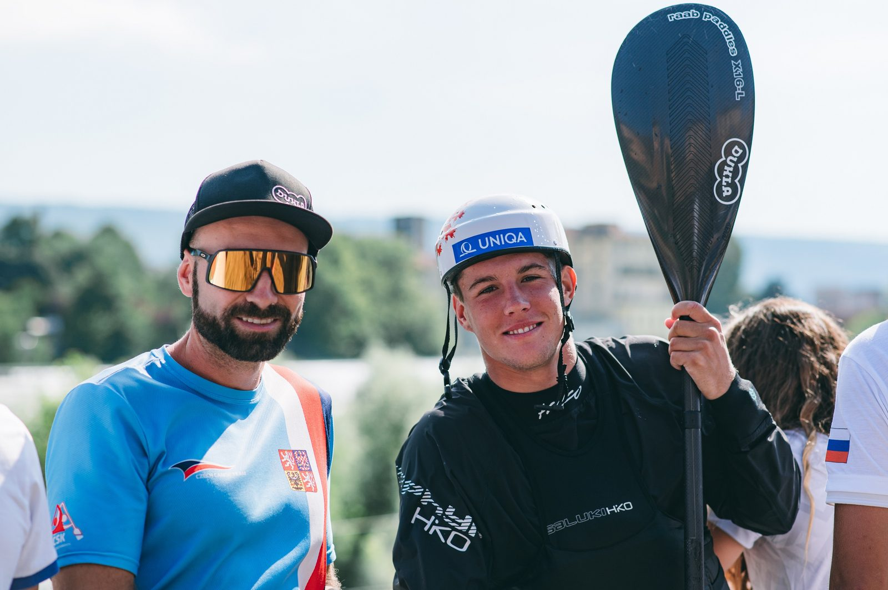
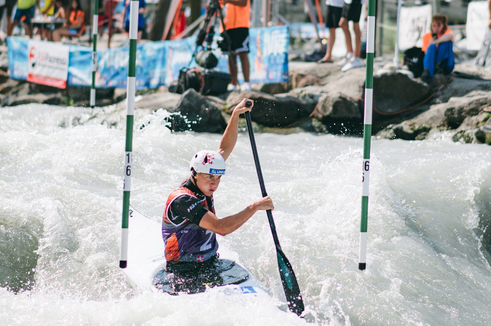

Vodácký areál Lídy Polesné se tento týden promění na dějiště evropského šampionátu juniorů a závodníků do 23 let ve vodním slalomu. Na startu nebude chybět celá řada českých hvězd, včetně domácího kajakáře a úřadujícího mistra Evropy do 23 let Jakuba Krejčího, vicemistra Evropy z loňskaa bronzového medailisty ze světového šampionátu do 23 let Vojtěcha Hegerači stříbrné z Ivree Gabriely Satkové, jež opět nastoupí v obou disciplínách. Mistrovství Evropy mladých slalomářů, které do Českých Budějovic míří vůbec poprvé v historii, startuje 11. srpna.


Šéftrenér reprezentace U23 Jan Vondra se svým svěřencem Jakubem Krejčím
„Kanál v areálu Lídy Polesné je poměrně specifický. Patří k užším kanálům, voda se tu často mění, takže si troufám říct, že závodníci, kteří tu mají více naježděno, jsou ve výhodě,“ uvádí šéftrenér reprezentace do 23 let Jan Vondra. „Doufám, že tu náš tým zaboduje, vylovíme co nejvíce medailí a trošku si spravíme reputaci po ne tolik vydařeném mistrovství světa v Ivree,“ dodává Vondra.
Český tým bude opět patřit k favoritům, před domácím publikem bude obhajovat 15 medailí z loňského evropského šampionátu v Solkanu. Na stříbrný úspěch ze Slovinska i letošní povedené výsledky chce navázat kanoista Vojtěch Heger. „Je pravda, že v letošní sezoně mám celkem pozitivní bilanci – na každém závodě jsem si dokázal splnit cíl, tak snad v tom budu pokračovat,“doufá bronzový z letošního světového šampionátu do 23 let a sedmý z dospělého mistrovství světa v Augsburgu. „Určitě bych chtěl minimálně obhájit stříbro z loňska a v lepším případě bojovat o titul. Jsem rád, že se tento šampionát koná v České republice a na závody na domácí trati se těším.“
Mistrovství Evropy bude speciální pro kajakáře Jakuba Krejčího, který je na trati doslova jako doma – na kanále trénuje bezmála deset let. „Myslím si, že určitou výhodu oproti ostatním závodníkům mám, na druhou stranu uvidíme, jak se budu umět vyrovnat s tlakem domácího prostředí. Ale já si sám na sebe ten tlak moc nevytvářím, budu chtít podat jen to nejlepší, co umím a na co mám. Věřím, že když budu s jízdami spokojený, může z toho být hodně dobrý výsledek,“ uvádí loňský mistr Evropy do 23 let.
Start závodů vyhlíží i Gabriela Satková, stříbrná z uplynulého světového šampionátu U23 v Ivree. „Na závody v Budějovicích se moc těším. Po dlouhé době je ME U23 opět v Česku a jsem za to moc ráda, protože závody před domácím publikem jsou vždy speciální. Věřím, že se spousta lidí přijde podívat, jak místní, tak rodina a kamarádi. Myslím si, že tu bude skvělá atmosféra. Mezinárodní závody jsem tu nikdy nejela, takže to bude taková premiéra a jsem moc zvědavá, jaké to bude,“ těší se Satková.


Gabriela Satková
Šampionát, kterého se zúčastní více než 300 závodníků z 24 zemí, odstartuje ve čtvrtek 11. srpna kvalifikacemi a týmovými závody kajakářek a kajakářů v obou věkových kategoriích.